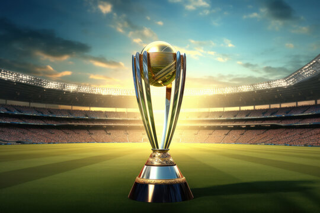

 Cricket World Cup Championship
Country with Their World Cups(order of winning)
||
1979 West Indies
1983 India
1987 Australia
1992 Pakistan
1996 Sri Lanka
1999 Australia
2003 Australia
2007 Australia
2011 India
2015 Australia
2019 England
2023 Australia
Captains ||
1975 West Indies Clive Lloyd
1979 West Indies Clive Lloyd
1983 India Kapil Dev
1987 Australia Alan Border
1992 Pakistan Imran Khan
1996 Sri Lanka Arjuna Ranatunga
1999 Australia Steve Waugh
2003 Australia Ricky Ponting
2007 Australia Ricky Ponting
2011 India MS Dhoni
2015 Australia Michael Clarke
2019 England Eoin Morgan
2023 Australia Pat Cummins